Install And Deploy ATM Monitoring¶
- In order to install and deploy the ATM Monitoring server application, you must have the proper software environment:
- Database Setup:
- The database server should be installed (Section Database Installation).
- The ATM Monitoring database must have been restored (Section Creating the Database for ATMMonitoring)
- The Runtime environment should have been installed:
- Depending on the purpose of the installation (development or testing/production) you must follow the steps described in Software environment setup.
If you already have the whole environment installed, then you can proceed to install and deploy the application itself. We detail the process for both development and production environments.
Development¶
This environment is meant for developers who want to make changes onto the software and test them in their local server.
Import the project into eclipse
Note
the import could be done by two ways, first importing from a version control tool, such as git or svn, second adding the sources from an external source, such as usb drive.
Once the project is correctly imported into eclipse, check the maven POM file and make sure that the ATMAgent is referenced in it this way:
<repositories> . . . <repository> <id>local-repo</id> <url>file://${project.basedir}/lib</url> </repository> . . . </repositories> <dependencies> . . . <dependency> <groupId>ncr.ATMMonitoring.agent</groupId> <artifactId>ATMAgent</artifactId> <version>1.0</version> </dependency> . . . </dependencies>
Note
make sure that the jar InventoryAgentData.jar is present in the folder lib
Next we must make the ATM Agent jar available to Maven as a dependency package. We can do it in two ways:
Installing it in the local Maven repo: select the pom file and right click on it, search for Run As ⇒ Maven build..., that will open a window, search for the option goal and write the following:
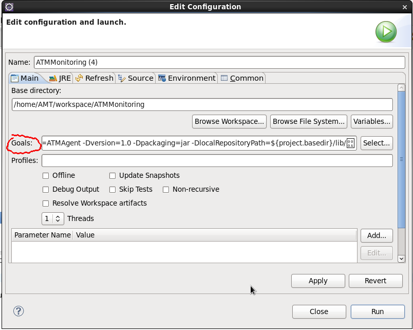org.apache.maven.plugins:maven-install-plugin:2.3.1:install-file -Dfile=${project.basedir}/lib/InventoryAgentData.jar-DgroupId=ncr.ATMMonitoring.agent -DartifactId=ATMAgent -Dversion=1.0 -Dpackaging=jar -DlocalRepositoryPath=${project.basedir}/lib/Note
this step is actually independent from the whole process and can also be done using the command line.
Referencing the jar path: this method is completely discouraged, but it still can be used in testing environments:
<dependencies> . . . <dependency> <groupId>ncr.ATMMonitoring.agent</groupId> <artifactId>ATMAgent</artifactId> <version>1.0</version> <scope>system</scope> <systemPath>${project.basedir}/lib/InventoryAgentData.jar</systemPath> </dependency> . . . </dependencies>
Warning
by using this approach Maven won’t include the jar inside the resulting war, making this a bad practice. Use it only if you are completely aware of what you are doing.
Add a Tomcat Server in Eclipse¶
Go to File ⇒ New ⇒ Server
From the list select Tomcat 7:
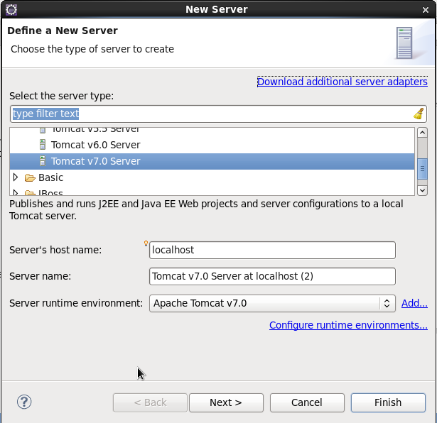Specify the home folder of the apache Tomcat in your machine:
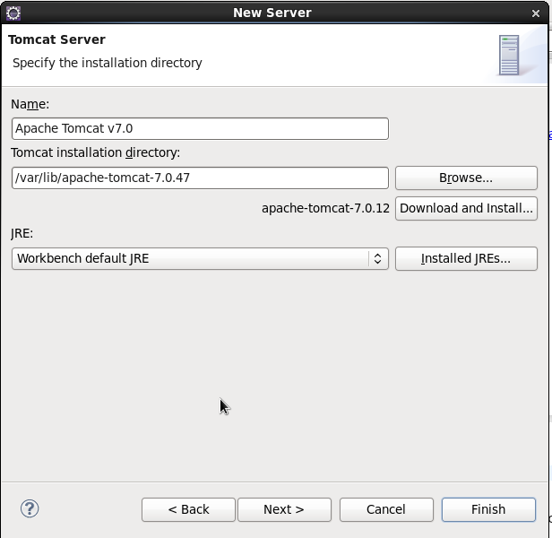Add the ATMMonitoring and press Finish:
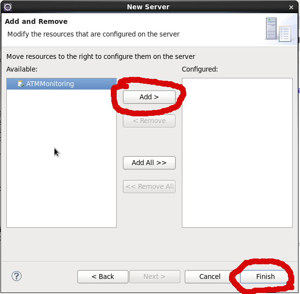Note
in this window you will see all the projects available to deploy in the Tomcat server.
Configure The Ports¶
This is optional and you should do it only in case you have another Tomcat server which is already using the default ports.
Double click the server in the servers view.
Replace the ports values in the ports section (left side of the interface) with any other available ones:
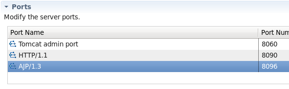Save the configuration.
Starting Tomcat¶
- Start the server and verify that there is no error while starting:
- 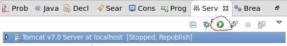
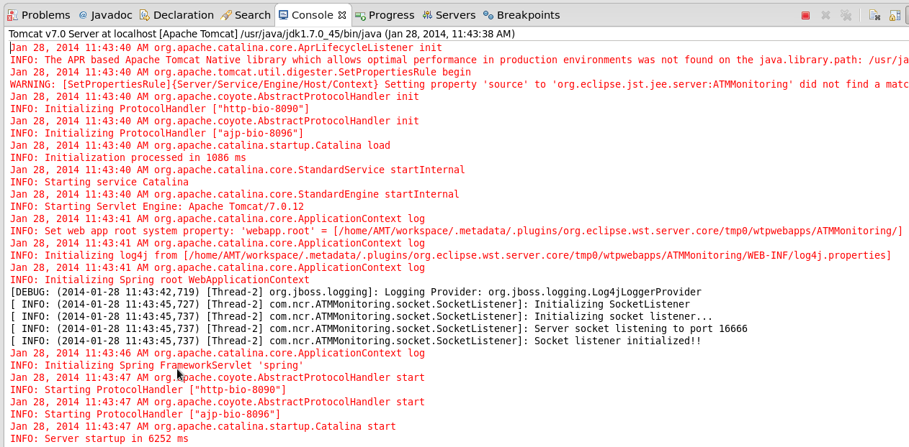
Note
to stop the server, press the red square button in the server view:
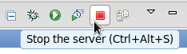You can also start the server by pressing the play button in this interface.
Note
a more detailed tutorial about configuring Eclipse and Tomcat can be found in Coreservlets.com
Restart and Debug Mode¶
- Is possible to restart the running instance, to do this press the same button (green with a white arrow) shown above.
- The debug mode will allow you to put breakpoints in the code and see in running time how the code is performing, to do so, press the green bug(located to the left of the start/restart button; see the picture above). This will launch the debug perspective (probably a pop up willshow up, press Yes in that case) after that you can put breakpoints and control the execution. A more detailed guide can be found in Vogella
Configure the Application¶
- Make sure that the application has the Maven feature enabled:
- Should have a M above the folder icon:
If the M is not present, right click over the project folder, select the option Configure ⇒ Convert to Maven Project.
Note
the process may take a while because the eclipse will download all the dependencies defined in the pom and then try to compile the project.
- Right click onto the project folder and select Properties:
- Search for the option Deployment Assembly:
Make sure that it looks like the next picture:
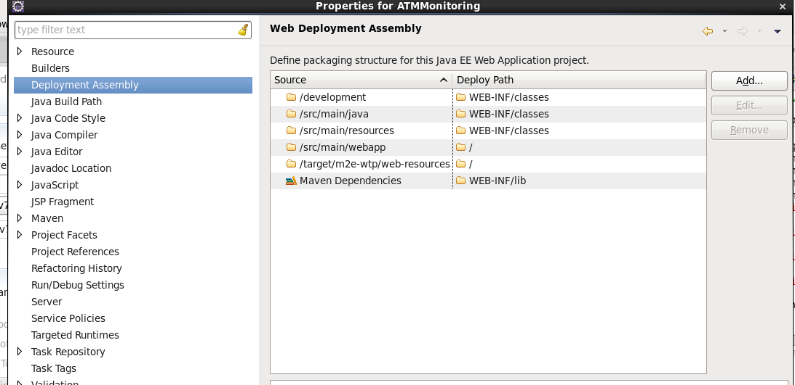
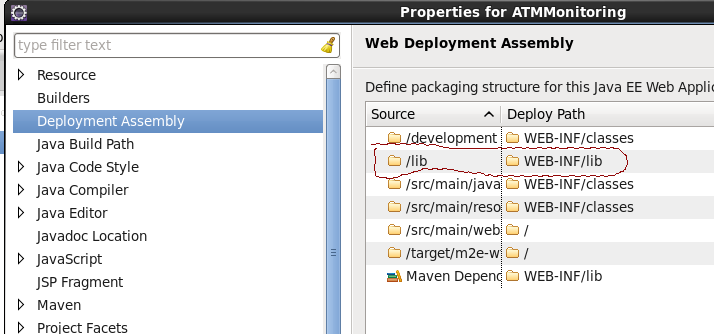Warning
despite that the Maven plugin is in charge of managing the dependencies and should include the InventoryAgentData.jar into the war, if you are using scope system after launching the application you will see an exception like this: Caused by: java.lang.ClassNotFoundException:com.ncr.agent.baseData.standard.jxfs.siu.CapabilitiesJxfsSIUCollector. To workaround this, add the lib folder into the Deployment Assembly as shown below,but remember that using scope system in the dependencies is discouraged and should be done only in test environments.
Check that the application is running (you may need to start or restart the Tomcat server, follow the steps in Starting Tomcat ), open http://localhost:8080/atm in your browser and check if you see the following:

Note
using the commmand Run As ⇒ Maven build... it is posible to execute tests, compile and deploy (and combining these steps in several ways) in any Tomcat server.
Test-Production¶
This environment has only the components that are essential for running the application (Database, JRE, and Tomcat), and will only work with a generated war file (except if you use Jenkins, which could compile a definitive version using the sources).
Configuring the Tests in Maven¶
In order to add testing functionality to Maven, which will enable the automated test before deploying the application, follow the next steps:
Make sure that the Maven central repository is present in the pom:
<repositories> . . . <repository> <id>central</id> <name>Maven Repository Switchboard</name> <layout>default</layout> <url>http://repo1.maven.org/maven2</url> <snapshots> <enabled>false</enabled> </snapshots> </repository> . . . </repositories>
Note
this may not be necessary if any other of the defined repositories already has the junit package.
Make sure that Junit is defined as a dependency with test scope
<dependencies> . . . <dependency> <groupId>junit</groupId> <artifactId>junit</artifactId> <version>4.11</version> <scope>test</scope> </dependency> <dependency> <groupId>org.springframework</groupId> <artifactId>spring-test</artifactId> <version>${org.springframework.version}</version> <scope>test</scope> </dependency> . . . <dependencies>
Note
if we don’t do this, our tests will simply not be run.
Using Maven To Compile And Generate The War File (Manual Deploy)¶
This installation uses Maven only to generate the war file, which we will manually deploy in the web applications Tomcat folder (TOMCAT_HOME/webapps)
Compiling And Packaging The Application¶
Go to the project root, where the pom.xml is.
Open a new command line and type:
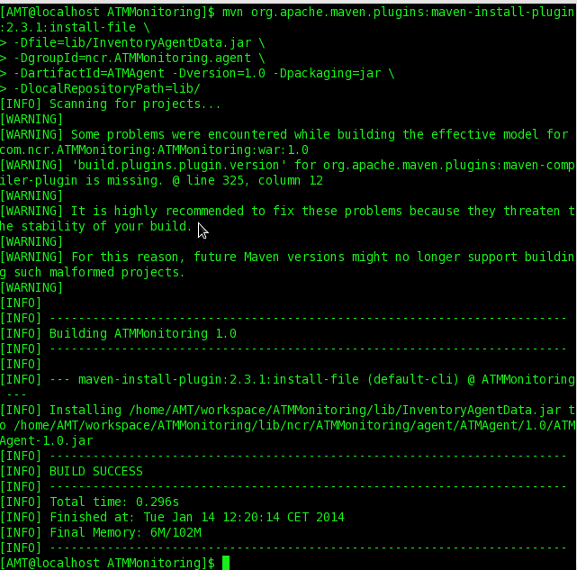$ mvn org.apache.maven.plugins:maven-install-plugin:2.3.1:install-file \ -Dfile=lib/InventoryAgentData.jar \ -DgroupId=ncr.ATMMonitoring.agent \ -DartifactId=ATMAgent -Dversion=1.0 -Dpackaging=jar \ -DlocalRepositoryPath=lib/
- Then type:
- 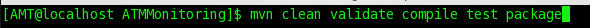
$ mvn clean validate compile test package
Note
this step can be accomplished from Eclipse as well. Right click onto the project and select Run As ⇒ Maven build..., then write the goals (clean validate compile test package) in the proper field and click Run.
If there is no error during the whole process, you should see something like this:
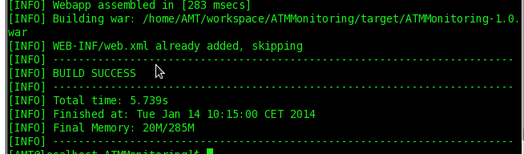Note
the clean goal deletes previous compiled sources in the target/classes directory; the validate goal makes sure that everything the applications need to compile is present; the compile goal compiles all the classes from main/src/java and test/java; the test goal execute all the test classes that are present inside the test folder; and last of all, package generates the war file. For more info visit the Maven Documentation.
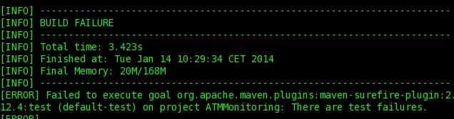Warning
if any of the tests fail or an exception is thrown, the whole build process will be marked as failed and maven will not produce the war file.
Deploying in Tomcat¶
Manual Deployment¶
Copy the generated war file, located in the folder target, to the webapps folder of Tomcat (TOMCAT_HOME/webapps):
- Simply use the command mv or cp in linux, or drag and drop using a graphical interface.
Using Tomcat Application Manager¶
Go to http://localhost:8080/manager/html/ #. Enter user and password for tomcat admin.
In the bottom of the page, search for the option WAR file to deploy.
Press the button labeled Choose File:
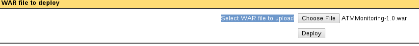Search for the war file generated by Maven.
Confirm with Deploy.
You should see a new application row with the value true in the Running column:
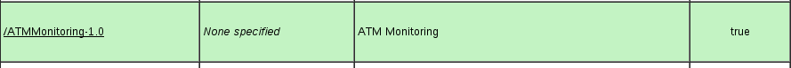
Using Maven To Compile, Generate The War File And Deploy Into a Tomcat server¶
This schema uses Maven not only to generate the war file, but to deploy it directly into a server.
Note
Maven and the Tomcat server must have been configured as described in the sections Configuration for Using Deploy with Maven and Configure Maven to deploy in Tomcat included in Software Environment Setup.
Check that the pom file includes the following section:
<plugins> . . . <plugin> <groupId>org.apache.tomcat.maven</groupId> <artifactId>tomcat7-maven-plugin</artifactId> <version>2.0</version> <configuration> <url>http://localhost:8080/manager/text</url> <path>/atm</path> <username>admin</username> <password>tomcat</password> <update>true</update> </configuration> </plugin> . . . </plugins>
Note
in the url parameter it is possible to add a remote address, and the Tomcat admin user and password should match the ones defined in Tomcat itself (please refer to Configuration For Deploying With Maven in Software Environment Setup).
Repeat the steps 1 and 2 of the section Compiling and packaging the application
- Execute:
$ mvn clean validate compile test tomcat7:deploy
Note
this step can be accomplished from Eclipse as well. Right click onto the project and select Run As ⇒ Maven build..., then write the goals (clean validate compile test tomcat7:deploy) in the proper field and click Run.
Using Jenkins To Compile, Generate The War File And Deploy Into a Tomcat server¶
This installation procedure uses Jenkins to handle Maven and the whole compile and deploy process. It can be configured to use Maven only for generating the war and then manually moving it into the webapps folder, or it can use Maven to deploy the app in Tomcat using the Maven tomcat 7 plugin.
Note
if the code is local (no version control system is being used) you have to make sure that the user that runs Jenkins (usually called jenkins) has permission to read and write over the directory where the sources are.
Compile And Deploy The Application¶
Create a new Job by clicking onto the icon called New Job in the left menu:
Assign a name to the new job.
Select the option Build a maven2/3 project.
Press the ok button:
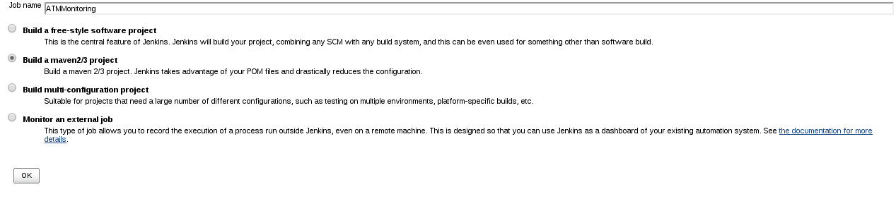- In the section Source Code Management, select none.
- This can be changed and select a control version system.
In the section build/Root POM indicate where the pom.xml is located.
In the build/goal write clean validate compile test tomcat7:deploy
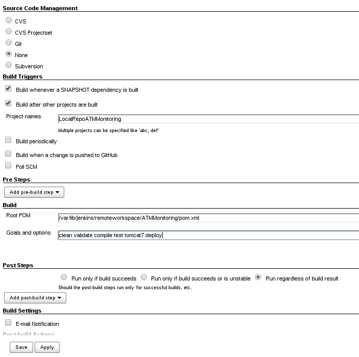Press Save.
Create The Local Repo¶
To have the ATMAgent.jar available in compilation time a local repo must be created. This is similar to the second step defined in Compiling and packaging the application . In order to do so, follow the next steps:
Follow the steps 1-6 from the previous section Compile and deploy the application
In the build/goal write
org.apache.maven.plugins:maven-install-plugin:2.3.1:install-file -Dfile=${project.basedir}/lib/InventoryAgentData.jar-DgroupId=ncr.ATMMonitoring.agent -DartifactId=ATMAgent -Dversion=1.0 -Dpackaging=jar -DlocalRepositoryPath=${project.basedir}/lib/In the section Post-build Actions press the button Add Post Build Action and from the options available choose Build other projects:
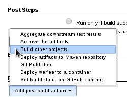Write the name given to the job created in the previous section Compile and deploy the application
Press Save.
Note
if the jar ATMAgent.jar is located in a remote repository and referenced in the pom, this step is not needed.

Table Of Contents
- Install And Deploy ATM Monitoring